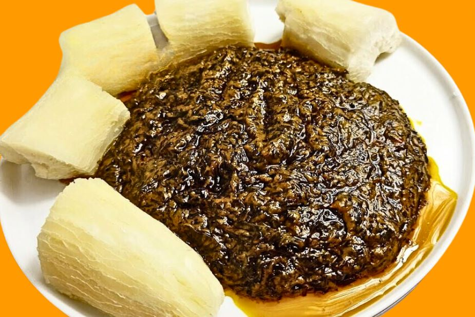

Recette Okok Sucré
Le Okok est un plat traditionnel du peuple Beti préparé avec les feuilles de Gnetum sp. Dont il porte le nom en langue locale.
- Total:Approximative 35min
- Preparation:15min
- Cuisson:20min
Ingredients
- 400g de feuilles d’okok
- 2 grosses cuillères à soupe de pâtes d’arachide
- Pulpe de noix de palme (la boîte de 800g )
- Sucre en poudre ( mettre à votre convenance )
- Un peu de sel ( 4 pincées de sel)
- Eau
Instructions
- Etape 1: laver 3 fois les feuilles okok
- Etape 2: Mettre la pulpe de noix et les feuilles d’okok mesurer l’eau avec la boîte de conserve remplir la boîte 2 fois D’eau , bien mélanger de manière homogène ensuite ajouter le sel
- Etape 3: Laissez cuire avec la cocotte minute pendant 30 min et si marmite normale 45 min
- Etape 4: Ensuite rajouter les 2 cuillères à soupe de pâte d’arachides puis bien mélanger
- Etape 5: Laissez cuire à feu moyen pendant 20 à 25 min en surveillant et tournant régulièrement pour éviter que ça ne crame en bas.Puis ajoutez le sucre à votre convenance
- Etape 6: Votre okok est prêt quand vous voyez l’huile remonter au dessus
Nutrition
Le tableau ci dessous vous montre les valeurs nutritionnelles des differents aliments utilisés pour la cuisson de ce repas ainsi que les calories qu'ils apportent
| Calories | 277kcal |
| Glucides | 0g |
| Proteins | 20g |
| Lipides | 22g |